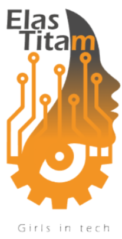

Lapa Tito | Período: Abril a Novembro de 2025
O projeto ElasTitam se consolidou como um programa de alto engajamento e relevância, superando as expectativas em termos de satisfação e participação voluntária
Eventos Realizados
Inscrições Realizadas
Feedbacks Coletados
Média de Avaliação
A qualidade percebida do projeto é praticamente unânime, refletindo o sucesso da abordagem afetiva, segura e inspiradora do ElasTitam.

A análise dos depoimentos revela que o ElasTitam é percebido como um espaço seguro, inspirador e transformador.
"Ambiente de extremo acolhimento, comunhão e amor."
"Me senti ouvida, confortável e sem medo de ser julgada."
"Entender que não estou sozinha."
"Ver outras meninas e mulheres passando por situações parecidas."
"Palestrante super didática, explicou tudo com clareza."
"Palestrante super didática, explicou tudo com clareza."
"Queria que tivesse mais palestras."
"Gostaria que fosse maior, foi muito curto."
O ElasTitam é um Ativo Estratégico, entregando Qualidade Máxima e Engajamento Profundo alinhado com a promoção de tecnologia e diversidade.
Tabela completa com a síntese de todos os 16 eventos realizados, incluindo palestrantes e destaques dos feedbacks.
Os dados justificam formalmente a continuidade e ampliação para outras unidades.
Foco em Carreira em TI, Diversidade/Inclusão e Temas de Dados/IA sob a lente feminina.
Palestras conduzidas por ex-alunas, alunas atuais e docentes têm ótimo desempenho em QA, UX, dados e IA.
Revisar o processo para registrar melhor quem participa fisicamente, especialmente em oficinas com alta presença informal.